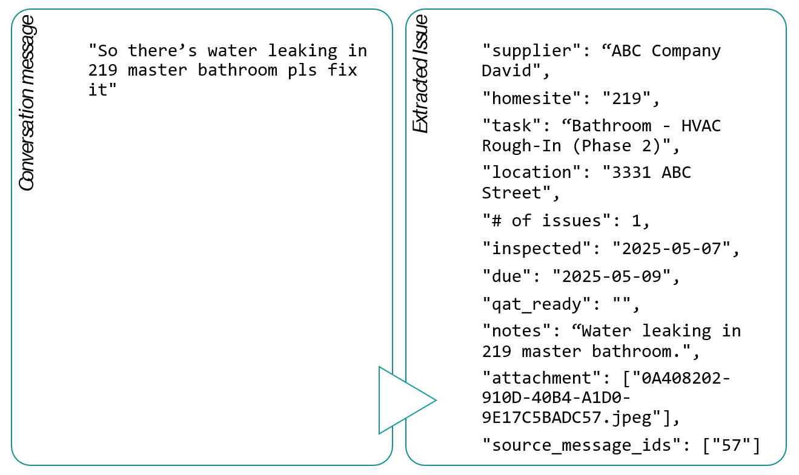
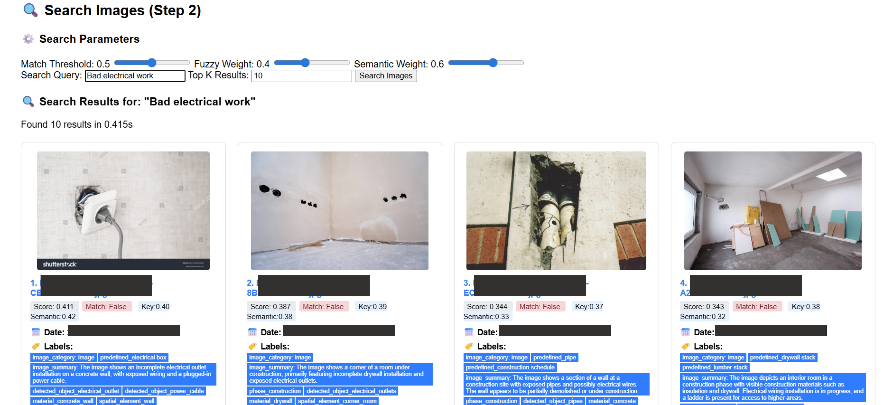

Applied-AI engineering at Lennar Corporation, using LLMs/VLMs to interpret messy construction communications and site imagery, and turn them into structured, searchable project data.
Applied AI Engineer Intern · June – August 2025
A single target message, supported by previous messages and external data pulled from the existing database.
The extracted issue plus an evaluation report — produced through data preprocessing, classification & clustering, extraction, and enrichment.

Input: parsed images plus a user query. Output: the top-k most relevant images — searchable in plain language, no manual tagging required.
Extracts visual features and metadata from site images.
Analyzes construction documents, QC reports, and forms.
Resolves natural-language queries to the most relevant images.
